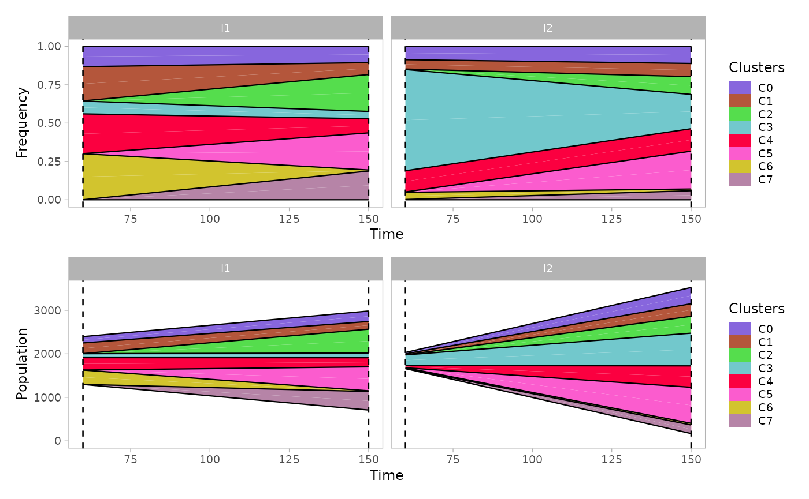
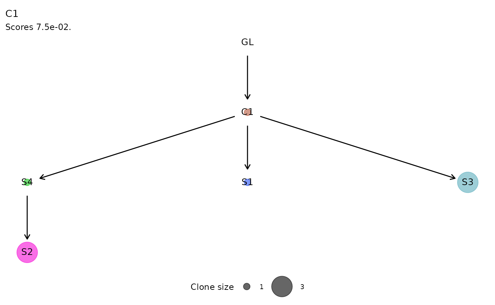
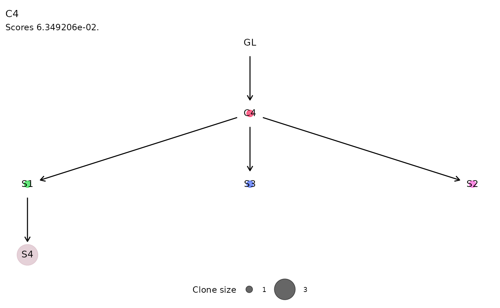
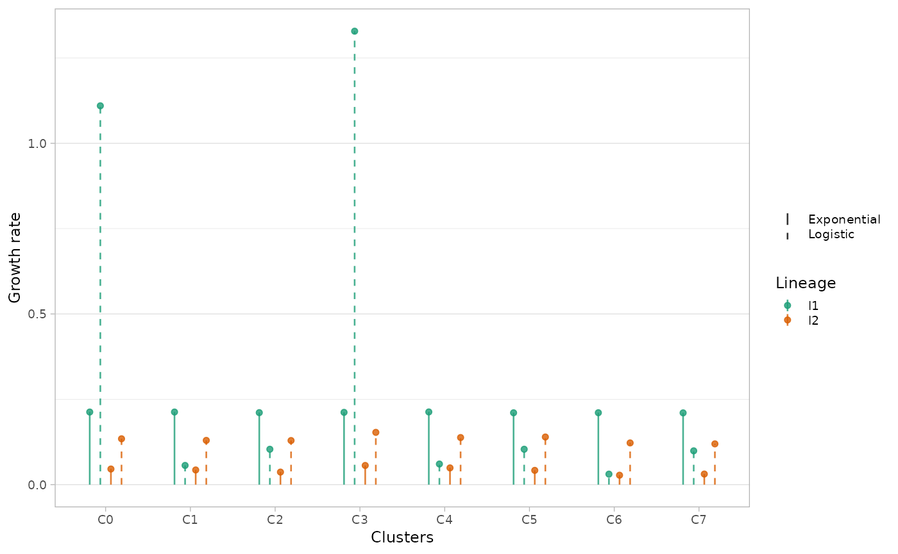

library(lineaGT)
#> Warning: replacing previous import 'cli::num_ansi_colors' by
#> 'crayon::num_ansi_colors' when loading 'VIBER'
#> Warning: replacing previous import 'cli::num_ansi_colors' by
#> 'crayon::num_ansi_colors' when loading 'easypar'
#> ✔ Loading ctree, 'Clone trees in cancer'. Support : <https://caravagn.github.io/ctree/>
#> Warning: replacing previous import 'crayon::%+%' by 'ggplot2::%+%' when loading
#> 'VIBER'
#> ✔ Loading VIBER, 'Variational inference for multivariate Binomial mixtures'. Support : <https://caravagn.github.io/VIBER/>
#> ✔ Loading lineaGT, 'Lineage inference from gene therapy'. Support : <https://caravagnalab.github.io/lineaGT/>
#> ! The 'lineagt-env' environment is already loaded!
data(x.example)
x.example
#> ── [ lineaGT ] ──── Python: /usr/share/miniconda/envs/lineagt-env/bin/python ──
#> → Lineages: l1 and l2.
#> → Timepoints: t1 and t2.
#> → Number of Insertion Sites: 66.
#>
#> ── Optimal IS model with k = 8.
#>
#> C4 (19 ISs) : l1 [285, 209]; l2 [ 51, 492]
#> C1 (15 ISs) : l1 [245, 177]; l2 [ 23, 289]
#> C0 (6 ISs) : l1 [145, 240]; l2 [ 32, 373]
#> C2 (6 ISs) : l1 [ 1, 547]; l2 [ 1, 388]
#> C3 (6 ISs) : l1 [ 92, 109]; l2 [245, 751]
#> C5 (6 ISs) : l1 [ 0, 551]; l2 [ 1, 828]
#> C6 (4 ISs) : l1 [330, 16]; l2 [ 17, 38]
#> C7 (4 ISs) : l1 [ 0, 426]; l2 [ 1, 198]Mixture weights
The mixture weights and number of ISs per cluster can be visualized
with the function plot_mixture_weights() .
plot_mixture_weights(x.example)
Scatterplot
The function plot_scatter_density() returns a list of 2D
multivariate densities estimated by the model. The argument
highlight can be used to show only a subset of clusters and
the argument min_frac to show the clusters with the
specified frequency in at least one dimension.
Note that the observed coverage values across lineages and over time are modeled as independent, therefore each dimension corresponds to a combination of time-point and lineage.
plots = plot_scatter_density(x.example)
plots$`cov.t2.l1:cov.t1.l2` # to visualize a single plot
Marginal distributions
The function plot_marginal() returns a plot with the
marginal estimated densities for each cluster, time-point and
lineage.
The option single_plot returns the density of the whole
mixture grouped by lineage and time-point.
marginals = plot_marginal(x.example)
marginals_mixture = plot_marginal(x.example, single_plot=T)
patchwork::wrap_plots(marginals / marginals_mixture)
Mullerplot
The function plot_mullerplot() shows the expansion of
the identified populations over time. It supports the options
which=c("frac","pop") corresponding to the absolule
population abundance and the relative fraction, respectively.
mp1 = plot_mullerplot(x.example, which="frac")
mp2 = plot_mullerplot(x.example, which="pop")
patchwork::wrap_plots(mp1, mp2, ncol=1)
If the option mutations is set to TRUE,
then the subclones originated within each population will be reported as
well in the mullerplot.
mp1 = plot_mullerplot(x.example, which="frac", mutations=T)
mp2 = plot_mullerplot(x.example, which="pop", mutations=T)
patchwork::wrap_plots(mp1, mp2, ncol=1)
The function supports also the visualization of a single clone to
monitor the growth of subpopulations, through the argument
single_clone.
plot_mullerplot(x.example, highlight="C4", mutations=T, single_clone=T)
Moreover, some of the identified clusters (showing low coverage in all dimensions) represents poly-clonal populations, since they cannot be uniquely identified by the mixture model. Therefore, the estimated abundance values might be readjusted according to the estimated number of populations in each clusters.
estimate_n_pops(x.example)
#> C0 C1 C2 C3 C4 C5 C6 C7
#> 1 2 1 1 2 1 1 1
plot_mullerplot(x.example, which="frac", mutations=T, estimate_npops=T)
VAF
The function plot_vaf_time() can be used to visualize
the behaviour of mutations variant allele frequencies over time for each
subclone.
plot_vaf_time(x.example)
Phylogenetic evolution
For each cluster of ISs, the function plot_phylogeny()
reports the estimated phylogenetic tree.
plot_phylogeny(x.example)
#> This graph was created by an old(er) igraph version.
#> Call upgrade_graph() on it to use with the current igraph version
#> For now we convert it on the fly...
#> This graph was created by an old(er) igraph version.
#> Call upgrade_graph() on it to use with the current igraph version
#> For now we convert it on the fly...
#> This graph was created by an old(er) igraph version.
#> Call upgrade_graph() on it to use with the current igraph version
#> For now we convert it on the fly...
#> This graph was created by an old(er) igraph version.
#> Call upgrade_graph() on it to use with the current igraph version
#> For now we convert it on the fly...
#> $C0
#>
#> $C1
#>
#> $C4
#>
#> $C7
Clonal Growth
The fitted exponential and logistic growth regressions are shown with
the plot_growth_regression() , reporting by default the fit
of the best model, selected as the one with the highest likelihood.
Both regressions can be inspected setting show_best=F
.
plot_growth_regression(x.example, show_best=F)
#> Scale for colour is already present.
#> Adding another scale for colour, which will replace the existing scale.
The same function can be used to show the growth regressions for the subclones identified by somatic mutations.
plot_growth_regression(x.example, highlight="C4", mutations=T)
An alternative way of visualising differences in growth rates is
through plot_growth_rates() function, reporting the values
of estimated growth rates for each (sub)population.
Disabling the show_best option, the model with lowest
likelihood is shown as a dashed line.
plot_growth_rates(x.example, show_best=F)